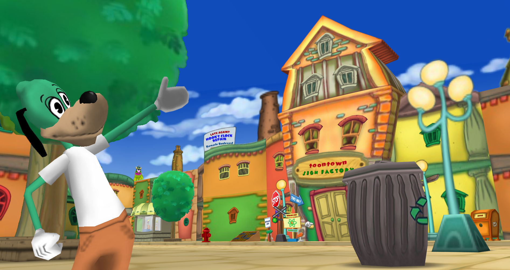

Behind the Scenes at Loony Labs
Posted by: Flippy Jr. on March 20, 2020 at 8:29 PM
Oh, Hello Toons! It’s me, Flippy Jr.! I’m so glad you’re here! Come in and let’s chat! You know, this room has always been one of my favorites. Loony Labs always has a special place in my heart. Why? The legendary Doctor Dimm and his assistant Professor Prepestora of course… they were bug squashing legends! But also… their great leader. You’ve heard of him I’m sure. He was an inventor, a creator, and a trickster. His name was Doctor Surlee. We haven’t heard from these three founding fathers of our town, and frankly I don’t know if we ever will. What I DO know however… is that Loony Labs is working round the clock always to keep ToonTown Relived in tip-top shape! This means doing weekly minor updates as well as monthly/bi-monthly major updates. This week here on the blog, we thought it’d be fun to highlight some of the NEW ADVANCES happening in town this weekend that originated from Loony Labs!First off, we want to highlight our new improvements to the Upgrade Shop! I sat down with Bill Board, owner of the Toontown Sign Factory on Silly Street in Toontown Central and he said this in regards to the work Loony Labs did for this week: “Business is BOOMING! That’s right. Starting with this update, Toons can upgrade all the way to Donald's Dreamland I also was getting a lot of complaints from toons not being able to upgrade more than once. Guess what? Thanks to Loony Labs technological advancement, Toons who have previously upgraded can now UPGRADE FURTHER! We also have a great new deal. Closing time, gotta run!” Drop by ToonTown Sign Factory on Silly Street, ToonTown Central and upgrade today! You can’t miss the building… no seriously you can’t. It is a DANCING building.
Let’s continue with our other highlights. I sat down with Loony Labs guinea pig err, dog rather… Goofy himself discussed the enhancements at Goofy Speedway thanks to Loony Labs. "GWARSH! That new-fangled racing tech-no-logic-al gizmo is making kart racing a lot more FUN! In fact, Loony Labs created a brand new DRIFTING system a few weeks ago that makes racing more exciting! But the best thing about this week’s update, is that GRAND PRIX MONDAYS have arrived in Toontown Relived! And if you miss Mondays, catch it as part of SILLY SATURDAYS! D’oh, my kart’s on fire!!!!! AHHH!!!!!"
And now before we wrap up this Behind the Scenes episode, let's get a quick TOON TIP!
TOON TIP: Don’t forget at 70 laff, you can go see Shep Ahoy & Professor Flake to begin working on your Bossbot and Lawbot Cog Suits! Visit Shep Ahoy at All for Nautical on Seaweed Street, Donald’s Dock. Visit Professor Flake at The Precipitation Foundation on Polar Place, The Brrrgh.
Well Toons, that’s enough beakers and boiling for one blog post. Again, stay toon-ed for more weekly updates. We will be updating the blog, discord, and the game frequently the next few weeks so you won’t want to miss out! Spread the word to your friends and login to start YOUR adventure! See you next time!
Note from the Toontown Relived Team:
Our thoughts are going out to all those affected by COVID-19 (Coronavirus). Whether you've lost your job temporarily, lost a loved one, or just feel alone we are keeping you in our thoughts. We will continue to operate with new updates as much as possible during these tough times. Please, stay well and be strong. We're all in this together. Feel free to reach out to us on our Discord server or via the Support email if we can assist you in any way. TOONS OF THE WORLD, UNITE!